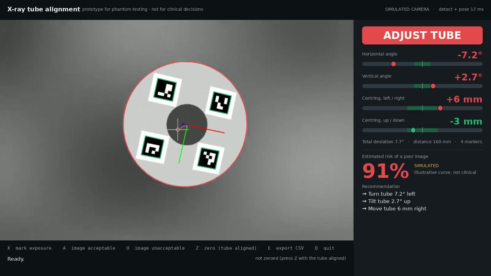
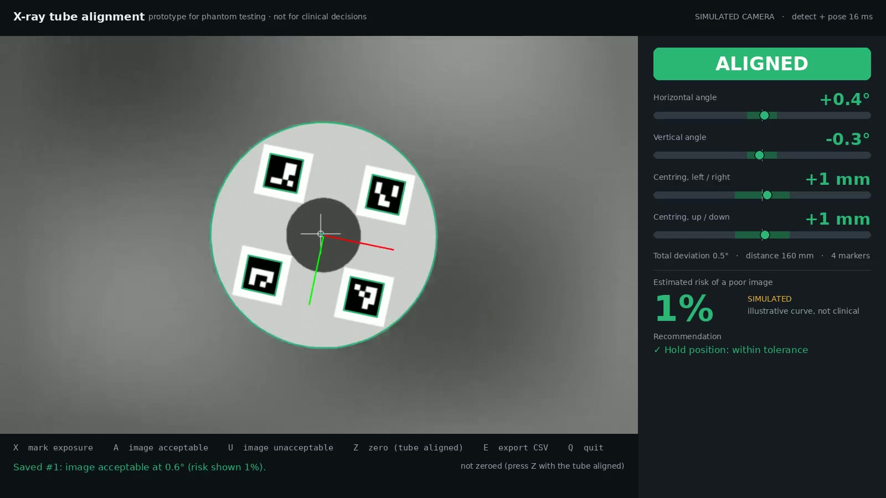

What the operator sees
The camera view shows each detected marker outlined, the ring's axes, and an arrow from the tube axis to the ring centre. The side panel shows horizontal and vertical angle and centring, each green inside its tolerance and red outside. Below that come the estimated risk and plain corrections. X marks an exposure; A or U records the image verdict with the alignment at that moment.
Misaligned: −7° horizontal

Corrected, exposure saved as acceptable

Exposure log written during the demo (SQLite)
| # | Time | Horizontal | Vertical | Total | Centring | Distance | Markers | Risk shown | Model | Verdict |
|---|
One row per exposure; E exports CSV. Raw (unsmoothed) values are stored, so analysis is not affected by the display filter.
Accuracy, measured against ground truth
A synthetic camera renders the marker ring at exactly known poses through a distorting lens (1280×800, 70° field of view, barrel distortion, blur and sensor noise). The pipeline first calibrates that camera from 25 rendered ChArUco views, as you would with a printed board. With the calibrated values, it then estimates 144 poses: 4 distances × 12 orientations × 3 noise draws, with random centring offset and ring rotation.
Angle error by distance (RMS)
Measured vs true horizontal angle (all 144 frames)
Not covered by the synthetic test: real print quality, glare on glossy labels, motion blur from a moving tube, and the dental phantom itself. Those are the first things to check on the phantom.
Why the pose uses the whole ring, not one marker
A single small square seen nearly face-on fits two mirror-image tilts almost equally well. When the tube is close to aligned, the markers face the camera, which is exactly where this ambiguity is worst. Solving one pose from all marker corners spread around the ring removes the ambiguity and averages out corner noise.
Same still pose, 60 frames (true horizontal −7.0°)
What it means for the risk display
In the still-pose test, the single marker read a −7° tube as about —° on average. On the simulated curve, that moves the displayed risk from 85% to —%.
Estimated risk, and learning it from your feedback
Until there is data, the risk is an illustrative logistic curve of the total angular deviation, always labelled SIMULATED on screen. It is tuned so that 7° shows 85%, matching the brief's example. Each acceptable or unacceptable verdict is stored with the measured angles. Once there are at least 20 verdicts with both outcomes, the app fits the same curve to them and labels it FITTED with the count.
Simulated risk curve (illustrative, not clinical)
How many phantom exposures a fitted curve needs
Database: exposures table (SQLite; CSV export)
ts | time of the verdict | horizontal_deg, vertical_deg, total_deg | angles at the marked exposure (raw) |
dx_mm, dy_mm, distance_mm | centring and distance | markers_seen, reproj_px | tracking quality at that moment |
risk_pct, risk_model | what the screen showed, and whether simulated or fitted | feedback, operator, note | acceptable / unacceptable, who, free text |
Camera, calibration and zeroing
Arducam 1MP OV9281 USB, global shutter
- 1280×800, up to 120 fps; mono is ideal for markers
- Global shutter: no skew while the tube moves
- M12 lens (70° H): set and lock focus at your working distance
- UVC: Windows, Linux and Mac without drivers; 38×38 mm board
- About $60 (RobotShop listing)
ELP 1080p USB module (USBFHD01M)
- UVC, driver-free
- 2.1 mm wide lens: more distortion, so calibrate carefully
- Rolling shutter: hold the tube still while reading
- About $41–55
Whatever the camera
- Turn autofocus off: refocusing changes the focal length and breaks the calibration.
- Choose a lens that can be focused at the tube-to-ring distance (typically 10–25 cm).
- Matte marker labels: glare on glossy print hides corners.
Calibration (printed ChArUco board)
Board image and a true-scale marker sheet (with a 50 mm print check) are included: charuco_board.png, ring_markers.pdf.

Zeroing the camera mount
The camera is clamped to the tube, never perfectly on its axis. With a 2° + 2° mounting offset:
| True | Not zeroed | Zeroed (Z key) |
|---|
Zero once per mounting, with the tube aligned using your current reference method (e.g. a jig).
Run it
Setup (Windows, macOS or Linux; Python 3.10+)
python -m venv .venv && . .venv/bin/activate # Windows: .venv\Scripts\activate pip install -r requirements.txt # opencv-contrib-python, numpy, pillow python -m pytest -q # 13 tests # no hardware needed: simulated camera # J/L turn, I/K tilt, F/H/T/G move the tube; X A U Z E Q as in the live app python -m xray_align.app --sim # real camera python -m xray_align.print_markers --out ring_markers.pdf python -m xray_align.calibrate --board-png charuco.png python -m xray_align.calibrate --camera 0 --out camera.json python -m xray_align.app --camera 0 --calib camera.json
In the folder
xray_align/detect.py | ArUco detection, whole-ring pose (SQPnP + LM), single-marker baseline, smoothing |
xray_align/geometry.py | Ring layout (JSON), alignment angles, zeroing |
xray_align/app.py | Live app: camera / video / simulated, keys, recording |
xray_align/risk.py | Simulated curve, logistic fit from feedback, corrections |
xray_align/store.py | SQLite log, CSV export |
xray_align/calibrate.py | ChArUco calibration (live or from images) |
bench/ | The measurements on this page |